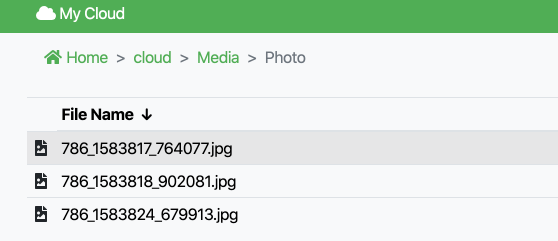
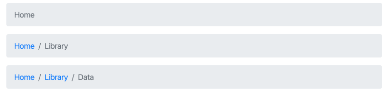

bootstrap 的使用

bootstrap 是全球最流行的前端框架，用来构建高响应，移动端优先的项目。
官网：https://getbootstrap.com/
GitHub 主页：https://github.com/twbs/bootstrap
release 页面：https://github.com/twbs/bootstrap/releases
下载
从官方发布页下载：
wget https://github.com/twbs/bootstrap/releases/download/v4.4.1/bootstrap-4.4.1-dist.zip
unzip bootstrap-4.4.1-dist.zip
引用
如果只想使用 bootstrap 的 css 特性，在 <head> 标签内 link：
<link rel="stylesheet" href="path/to/bootstrap.min.css">
如果想要全套的交互响应功能，需要 jQuery，popper.js 框架和引用 bootstrap.js 文件,注意引用顺序不能乱，jQuery must come first, then Popper.js, and then our JavaScript plugins，将一下 script 放到结束符号 </body> 标签前：
<script src="path/to/jquery.min.js"></script>
<script src="path/to/popper.min.js"></script>
<script src="path/to/bootstrap.min.js"></script>jQuery：https://github.com/jquery/jquery
popper.js：https://github.com/popperjs/popper.js
使用
官方手册：https://getbootstrap.com/docs/4.4/getting-started/introduction/
w3 教程：https://www.w3schools.com/bootstrap4/
breadcrumb

官网简介：https://getbootstrap.com/docs/4.4/components/breadcrumb/
breadcrumb 可以指明当前页面层级关系，使用 css 定义的符号进行分割。

<nav aria-label="breadcrumb">
<ol class="breadcrumb">
<li class="breadcrumb-item active" aria-current="page">Home</li>
</ol>
</nav>
<nav aria-label="breadcrumb">
<ol class="breadcrumb">
<li class="breadcrumb-item"><a href="#">Home</a></li>
<li class="breadcrumb-item active" aria-current="page">Library</li>
</ol>
</nav>
<nav aria-label="breadcrumb">
<ol class="breadcrumb">
<li class="breadcrumb-item"><a href="#">Home</a></li>
<li class="breadcrumb-item"><a href="#">Library</a></li>
<li class="breadcrumb-item active" aria-current="page">Data</li>
</ol>
</nav>为了为障碍浏览提供方便，针对面包屑这样具备导航功能的模块，建议添加一个有意义的标签：aria-label="breadcrumb" 來描述 <nav> 元素，以及使用 aria-current="page" 到这组导航的最后一个项目，以标明当前页面名称（路径）。
修改默认分割符：
<style>
.breadcrumb-item + .breadcrumb-item::before {
content: ">";
}
</style>